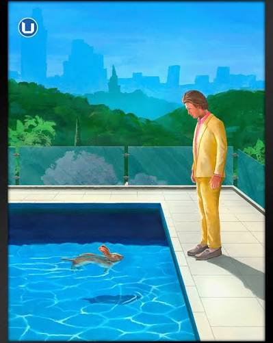
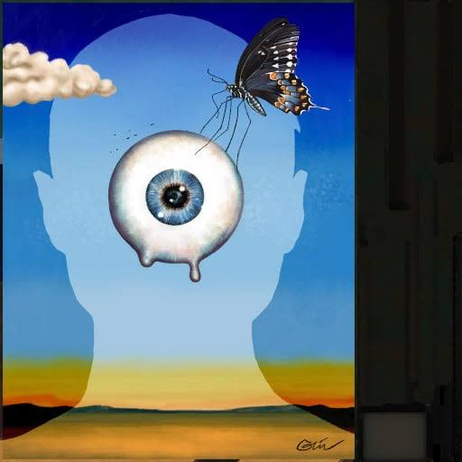
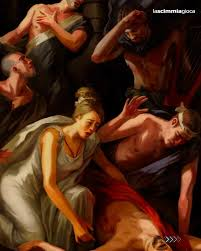

Aba Bar
Pittore · Incisore
Biografia
Aba Bar è un giovane artista emergente italiano che opera tra pittura e incisione, esplorando il rapporto tra memoria, natura e percezione del paesaggio contemporaneo. Nato a Bologna nel 1998, si forma presso l’Accademia di Belle Arti, dove approfondisce le tecniche pittoriche tradizionali e i procedimenti dell’incisione calcografica. La sua ricerca artistica unisce atmosfere intime e segni materici, alternando colori stratificati e dettagli incisi su lastra per creare immagini sospese tra realtà e immaginazione. Le sue opere sono state presentate in mostre collettive e spazi indipendenti, attirando l’attenzione per la capacità di fondere sensibilità contemporanea e tecniche artistiche storiche. Attraverso la pittura e l’incisione, Ferri indaga il tema del ricordo e delle trasformazioni del territorio, dando vita a opere caratterizzate da equilibrio, profondità e una forte componente poetica.
Opere
Titolo opera 1
Olio su tela · 2026

Titolo opera 2
Tecnica · 2025

Titolo opera 3
Tecnica · 2024
Incisioni


Mostre
2026 — Mostra personale
2025 — Mostra collettiva
2024 — Evento artistico
Contatti
email@artista.it